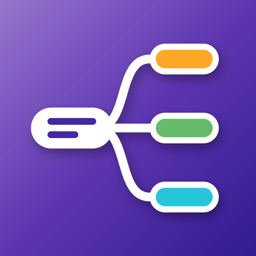

Política de privacidad
Editor de diagramas
Última actualización: 1 de noviembre de 2026
Esta política explica qué información maneja la aplicación para Android Editor de diagramas (la “App”), desarrollada por Oscar Ramírez (RamzLabs), Guadalajara, Jalisco, México (el “Desarrollador”), y cómo se utiliza.
- Los diagramas que creas (diagramas de flujo, mapas mentales, organigramas, etc.) se guardan solo en tu teléfono. La App no los sube a ningún servidor y el Desarrollador no puede verlos.
- La App no requiere crear una cuenta ni pide tu nombre, correo o teléfono.
- Tus diagramas solo salen del teléfono cuando tú los compartes o los guardas en otro lugar.
- La App muestra anuncios de Google AdMob, que recopila ciertos datos del dispositivo (como el ID de publicidad) para mostrar y medir anuncios.
1. Tus diagramas
- Cada diagrama se guarda en el almacenamiento privado de la App dentro de tu dispositivo, en un archivo con formato .mmx (XML) junto con una imagen pequeña de vista previa. Ahí se guarda todo lo que dibujas: figuras, textos, conectores, etiquetas, colores y estilos.
- Todo el trabajo (dibujar, editar, deshacer, exportar a imagen) ocurre en tu teléfono, sin conexión a internet. Los tipos de letra vienen incluidos en la App y no se descargan.
- Cuando importas un archivo .mmx con el selector de Android, o lo abres desde otra app con “Abrir con…” (por ejemplo WhatsApp, Gmail o el explorador de archivos), la App lee solo ese archivo y guarda una copia como diagrama nuevo. El archivo original no se modifica. La App no explora el resto de tus archivos.
El contenido de tus diagramas no se envía a servidores del Desarrollador ni a terceros, no se analiza con fines publicitarios y no se comparte con Google ni con anunciantes.
Solo sale de tu teléfono si tú lo decides:
- Exportar como imagen (PNG o JPG) y guardarla en la Galería de tu teléfono.
- Compartir la imagen o el archivo .mmx por WhatsApp o con la app que elijas.
- Guardar en… la ubicación que elijas con el selector de Android, que puede ser un servicio en la nube como Google Drive.
En esos casos se aplican las políticas de privacidad de las apps o servicios que elijas.
2. Publicidad (Google AdMob)
La App usa Google AdMob para mostrar anuncios (al abrir la App, un banner en la lista de diagramas y, de vez en cuando, un anuncio de pantalla completa). El SDK de Google Mobile Ads puede recopilar y procesar automáticamente:
- El ID de publicidad de Android.
- La dirección IP y la ubicación aproximada derivada de ella.
- Información del dispositivo y del sistema (modelo, versión de Android, idioma).
- Interacciones con los anuncios y datos de diagnóstico y rendimiento.
Google usa estos datos para mostrar anuncios, medir su rendimiento, prevenir fraudes y, cuando lo permites, personalizar la publicidad. Más información:
3. Consentimiento y control de los anuncios
- Si te encuentras en el Espacio Económico Europeo, el Reino Unido o Suiza, la App te pedirá tu consentimiento antes de usar tus datos para anuncios personalizados. Puedes cambiar tu elección en cualquier momento desde Inicio → menú (⋮) → Opciones de privacidad.
- En cualquier país puedes restablecer o eliminar tu ID de publicidad, o desactivar la personalización de anuncios, en Ajustes de Android → Google → Anuncios (o Ajustes → Seguridad y privacidad → Otros ajustes de privacidad → Anuncios).
4. Permisos de la App
- Internet y estado de la red: solo para cargar anuncios. Tus diagramas no se transmiten por internet.
- ID de publicidad: lo usa AdMob según lo descrito arriba.
- Almacenamiento (solo en Android 9 o anterior): se solicita únicamente cuando eliges guardar una imagen en la Galería. En Android 10 o posterior no hace falta ningún permiso para eso.
La App no lee tus fotos ni tus archivos por su cuenta: solo abre los que tú eliges. Tampoco accede a tus contactos, cámara, micrófono ni ubicación precisa.
5. Conservación y eliminación de datos
Tus diagramas permanecen en tu dispositivo hasta que los eliminas desde la App (menú (⋮) del diagrama → Eliminar), borras los datos de la App desde los ajustes de Android o la desinstalas. Como el Desarrollador no guarda copias, no puede recuperarlos si se pierden; para conservarlos, usa Guardar archivo .mmx o Compartir archivo .mmx. Las imágenes y archivos que exportaste o compartiste no se borran al desinstalar la App. Para los datos que trata Google, consulta la política de Google.
6. Seguridad
Tus diagramas se guardan en el almacenamiento privado de la App, al que otras aplicaciones no pueden acceder. Te recomendamos proteger tu teléfono con bloqueo de pantalla.
7. Menores de edad
La App es una herramienta de productividad que no está dirigida a menores de 13 años. No recopilamos de forma intencional información de menores.
8. Cambios a esta política
Podemos actualizar esta política. Publicaremos la versión vigente en esta misma página con su fecha de actualización.
9. Contacto
Si tienes preguntas sobre esta política o sobre tus datos, escribe a oscarivanramirezruiz96@gmail.com.